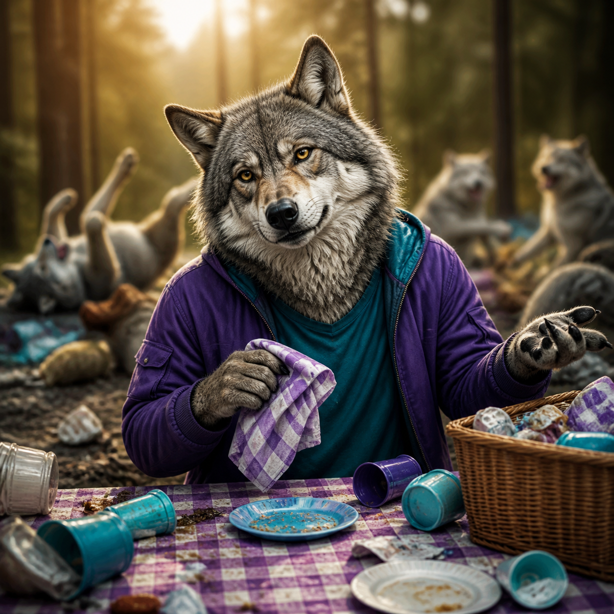

Профессиональные интересы
42 простых действия, сочетание двух направлений и ТОП‑10 профессий для проверки.
Пройти →Содержательные и развлекательные тесты с подробным результатом. Без регистрации — ответы рассчитываются на вашем устройстве.
42 простых действия, сочетание двух направлений и ТОП‑10 профессий для проверки.
Пройти →Логика, идеи, люди, исполнение и ещё четыре способа приносить пользу.
Пройти →Основатель, руководитель, эксперт, независимый или стабильный профессионал.
Пройти →
Какой вклад вы естественно привносите в общее дело?
Пройти →
Анализ, интуиция, совет, эксперимент или пауза?
Пройти →
Где вам легче сохранять интерес и показывать сильные стороны?
Пройти →Число сознания, миссия, шесть сфер и новый недельный разбор.
Открыть →Карта неба, личная неделя и важные периоды года простыми словами.
Открыть →Проверка пары или личная таблица знаков и чисел — с Big Data без мифов.
Открыть →Реальные ответы дают 80% результата, игровой код даты — 20%.
Пройти →Турбо, баланс, энергосбережение или легендарный ночной режим?
Пройти →Цифровая археология без закрытия чего-то важного.
Пройти →Кот, капибара, енот или сова — мемометр включён.
Пройти →
16 жизненных ситуаций: волк, лиса, медведь или дельфин.
Пройти →